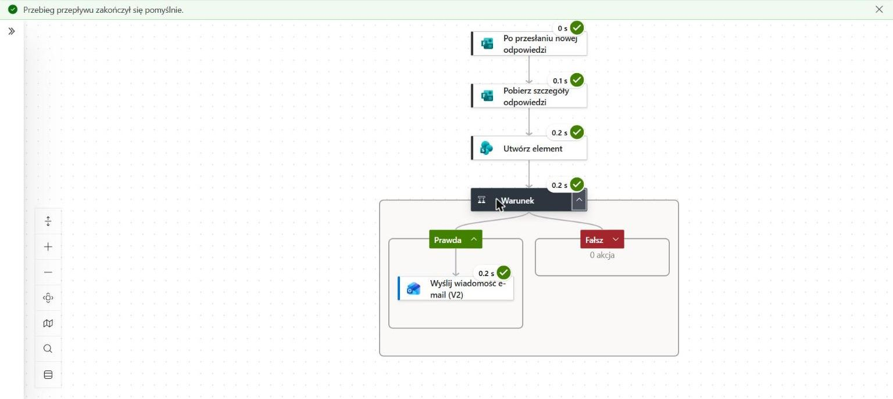

Projekt 01
Rejestr zgłoszeń IT
- CelZebrać zgłoszenia IT w jednym miejscu i nie przegapić pilnych.
- RozwiązanieFormularz, przepływ Power Automate i lista SharePoint.
- EfektZgłoszenia trafiają na listę same, pilne wysyłają e-mail.
Każdy projekt to nowe narzędzie, którego nauczyłem się, budując coś działającego. Przy każdym piszę, w czym pomogło AI i co sprawdziłem sam.

Projekt 01
Projekt 02
Projekt 03
Dane w projektach są fikcyjne albo zanonimizowane. Nie pokazuję danych prawdziwych klientów.
[TU 1 ZDANIE, np. propozycja krótkiej rozmowy lub demo]